Parametric Equations: Graphs
While not every fan (or team manager) appreciates it, baseball and many other sports have become dependent on analytics, which involve complex data recording and quantitative evaluation used to understand and predict behavior. The earliest influence of analytics was mostly statistical; more recently, physics and other sciences have come into play. Foremost among these is the focus on launch angle and exit velocity, which when at certain values can almost guarantee a home run. On the other hand, emphasis on launch angle and focusing on home runs rather than overall hitting results in far more outs. Consider the following situation: it is the bottom of the ninth inning, with two outs and two players on base. The home team is losing by two runs. The batter swings and hits the baseball at 140 feet per second and at an angle of approximately to the horizontal. How far will the ball travel? Will it clear the fence for a game-winning home run? The outcome may depend partly on other factors (for example, the wind), but mathematicians can model the path of a projectile and predict approximately how far it will travel using parametric equations. In this section, we’ll discuss parametric equations and some common applications, such as projectile motion problems.
Graphing Parametric Equations by Plotting Points
In lieu of a graphing calculator or a computer graphing program, plotting points to represent the graph of an equation is the standard method. As long as we are careful in calculating the values, point-plotting is highly dependable.
Sketching the Graph of a Pair of Parametric Equations by Plotting Points
Sketch the graph of the parametric equations
Solution
Construct a table of values for and as in Table 1, and plot the points in a plane.
The graph is a parabola with vertex at the point opening to the right. See Figure 2.
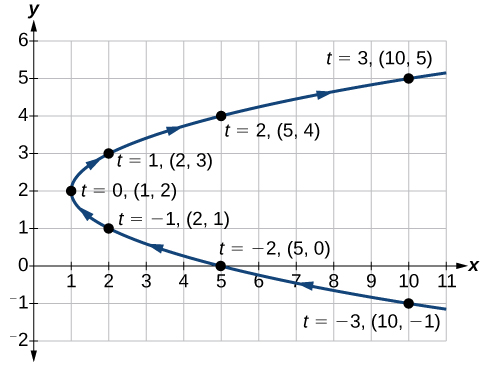
Sketching the Graph of Trigonometric Parametric Equations
Construct a table of values for the given parametric equations and sketch the graph:
Solution
Construct a table like that in Table 2 using angle measure in radians as inputs for and evaluating and Using angles with known sine and cosine values for makes calculations easier.
| 0 | ||
Figure 3 shows the graph.
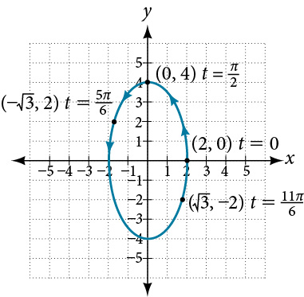
By the symmetry shown in the values of and we see that the parametric equations represent an ellipse. The ellipse is mapped in a counterclockwise direction as shown by the arrows indicating increasing values.
Analysis
We have seen that parametric equations can be graphed by plotting points. However, a graphing calculator will save some time and reveal nuances in a graph that may be too tedious to discover using only hand calculations.
Make sure to change the mode on the calculator to parametric (PAR). To confirm, the window should show
instead of
Graphing Parametric Equations and Rectangular Form Together
Graph the parametric equations and First, construct the graph using data points generated from the parametric form. Then graph the rectangular form of the equation. Compare the two graphs.
Solution
Construct a table of values like that in Table 3.
Plot the values from the table. See Figure 4.
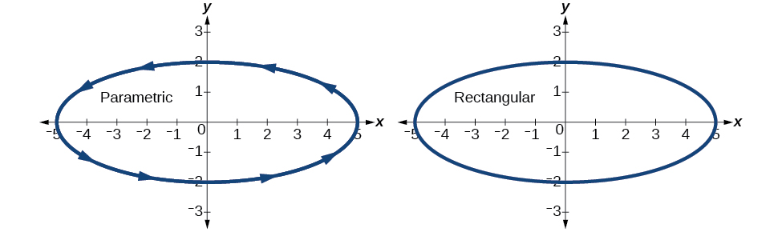
Next, translate the parametric equations to rectangular form. To do this, we solve for in either or and then substitute the expression for in the other equation. The result will be a function if solving for as a function of or if solving for as a function of
Then, use the Pythagorean Theorem.
Analysis
In Figure 5, the data from the parametric equations and the rectangular equation are plotted together. The parametric equations are plotted in blue; the graph for the rectangular equation is drawn on top of the parametric in a dashed style colored red. Clearly, both forms produce the same graph.
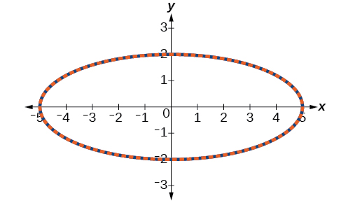
Graphing Parametric Equations and Rectangular Equations on the Coordinate System
Graph the parametric equations and and the rectangular equivalent on the same coordinate system.
Solution
Construct a table of values for the parametric equations, as we did in the previous example, and graph on the same grid, as in Figure 6.
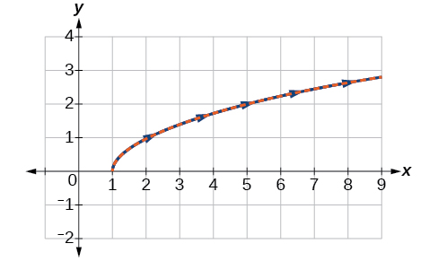
Analysis
With the domain on restricted, we only plot positive values of The parametric data is graphed in blue and the graph of the rectangular equation is dashed in red. Once again, we see that the two forms overlap.
Applications of Parametric Equations
Many of the advantages of parametric equations become obvious when applied to solving real-world problems. Although rectangular equations in x and y give an overall picture of an object's path, they do not reveal the position of an object at a specific time. Parametric equations, however, illustrate how the values of x and y change depending on t, as the location of a moving object at a particular time.
A common application of parametric equations is solving problems involving projectile motion. In this type of motion, an object is propelled forward in an upward direction forming an angle of to the horizontal, with an initial speed of and at a height above the horizontal.
The path of an object propelled at an inclination of to the horizontal, with initial speed and at a height above the horizontal, is given by
where accounts for the effects of gravity and is the initial height of the object. Depending on the units involved in the problem, use or The equation for gives horizontal distance, and the equation for gives the vertical distance.
Finding the Parametric Equations to Describe the Motion of a Baseball
Solve the problem presented at the beginning of this section. Does the batter hit the game-winning home run? Assume that the ball is hit with an initial velocity of 140 feet per second at an angle of to the horizontal, making contact 3 feet above the ground.
- ⓐ Find the parametric equations to model the path of the baseball.
- ⓑ Where is the ball after 2 seconds?
- ⓒ How long is the ball in the air?
- ⓓ Is it a home run?
Solution
- ⓐ
Use the formulas to set up the equations. The horizontal position is found using the parametric equation for Thus,
The vertical position is found using the parametric equation for Thus,
- ⓑ
Substitute 2 into the equations to find the horizontal and vertical positions of the ball.
After 2 seconds, the ball is 198 feet away from the batter’s box and 137 feet above the ground.
- ⓒ
To calculate how long the ball is in the air, we have to find out when it will hit ground, or when Thus,
When seconds, the ball has hit the ground. (The quadratic equation can be solved in various ways, but this problem was solved using a computer math program.)
- ⓓ
We cannot confirm that the hit was a home run without considering the size of the outfield, which varies from field to field. However, for simplicity’s sake, let’s assume that the outfield wall is 400 feet from home plate in the deepest part of the park. Let’s also assume that the wall is 10 feet high. In order to determine whether the ball clears the wall, we need to calculate how high the ball is when x = 400 feet. So we will set x = 400, solve for and input into
The ball is 141.8 feet in the air when it soars out of the ballpark. It was indeed a home run. See Figure 7.
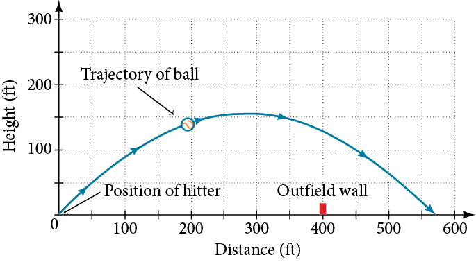
Key Concepts
- When there is a third variable, a third parameter on which and depend, parametric equations can be used.
- To graph parametric equations by plotting points, make a table with three columns labeled and Choose values for in increasing order. Plot the last two columns for and See Example 1 and Example 2.
- When graphing a parametric curve by plotting points, note the associated t-values and show arrows on the graph indicating the orientation of the curve. See Example 3 and Example 4.
- Parametric equations allow the direction or the orientation of the curve to be shown on the graph. Equations that are not functions can be graphed and used in many applications involving motion. See Example 5.
- Projectile motion depends on two parametric equations: and Initial velocity is symbolized as represents the initial angle of the object when thrown, and represents the height at which the object is propelled.
Section Exercises
Verbal
What are two methods used to graph parametric equations?
Solution
plotting points with the orientation arrow and a graphing calculator
What is one difference in point-plotting parametric equations compared to Cartesian equations?
Why are some graphs drawn with arrows?
Solution
The arrows show the orientation, the direction of motion according to increasing values of
Name a few common types of graphs of parametric equations.
Why are parametric graphs important in understanding projectile motion?
Solution
The parametric equations show the different vertical and horizontal motions over time.
Graphical
For the following exercises, graph each set of parametric equations by making a table of values. Include the orientation on the graph.
Solution
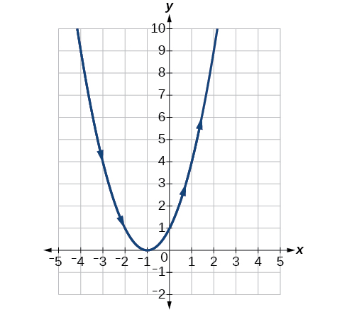
Solution
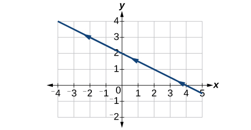
Solution
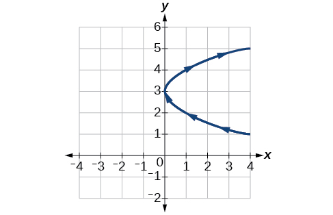
For the following exercises, sketch the curve and include the orientation.
Solution
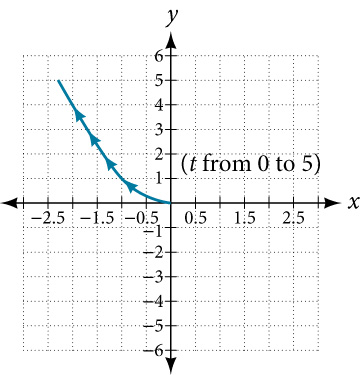
Solution
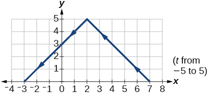
Solution
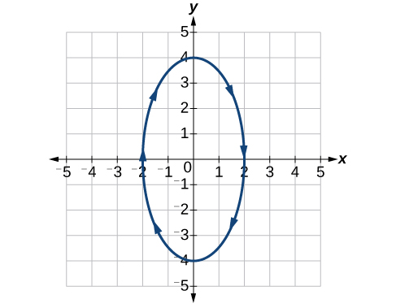
Solution
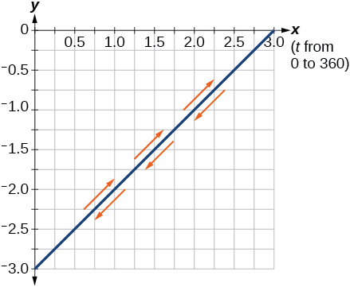
Solution
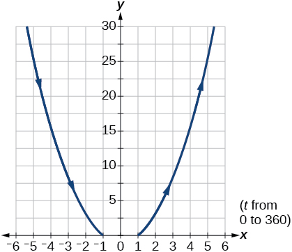
For the following exercises, graph the equation and include the orientation. Then, write the Cartesian equation.
Solution
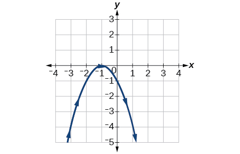
Solution
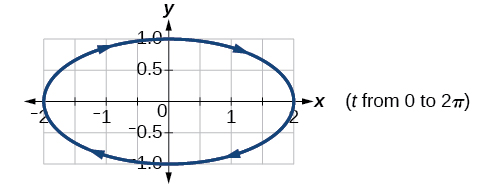
Solution
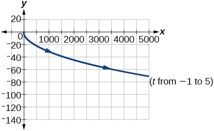
For the following exercises, graph the equation and include the orientation.
Solution
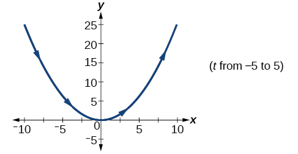
Solution
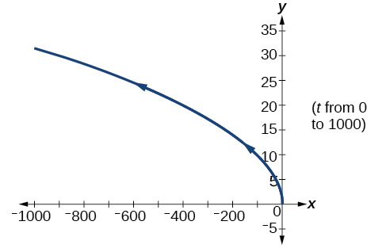
Solution
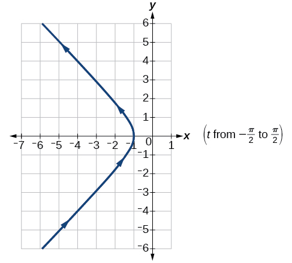
For the following exercises, use the parametric equations for integers a and b:
Graph on the domain where and and include the orientation.
Graph on the domain where and , and include the orientation.
Solution
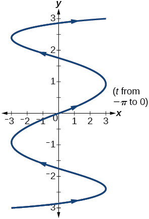
Graph on the domain where and , and include the orientation.
Graph on the domain where and , and include the orientation.
Solution
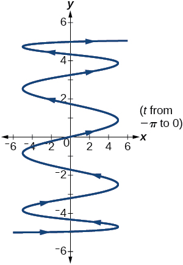
If is 1 more than describe the effect the values of and have on the graph of the parametric equations.
Describe the graph if and
Solution
There will be 100 back-and-forth motions.
What happens if is 1 more than Describe the graph.
If the parametric equations and have the graph of a horizontal parabola opening to the right, what would change the direction of the curve?
Solution
Take the opposite of the equation.
For the following exercises, describe the graph of the set of parametric equations.
and is linear
and is linear
Solution
The parabola opens up.
and is linear
Write the parametric equations of a circle with center radius 5, and a counterclockwise orientation.
Solution
Write the parametric equations of an ellipse with center major axis of length 10, minor axis of length 6, and a counterclockwise orientation.
Solution
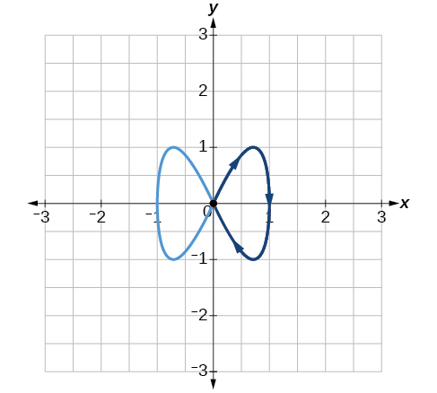
Solution
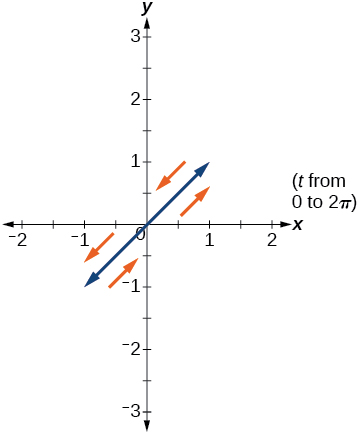
Solution
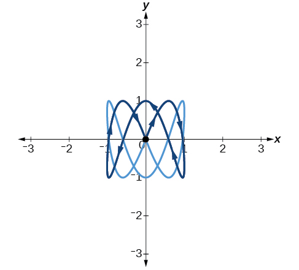
Technology
For the following exercises, look at the graphs that were created by parametric equations of the form Use the parametric mode on the graphing calculator to find the values of and to achieve each graph.
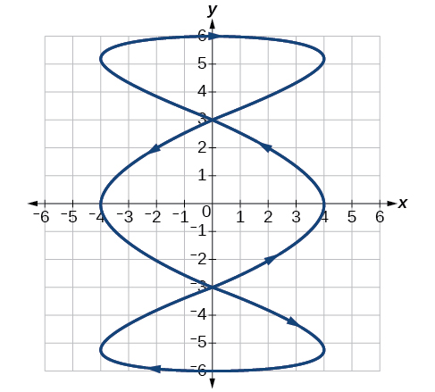
Solution
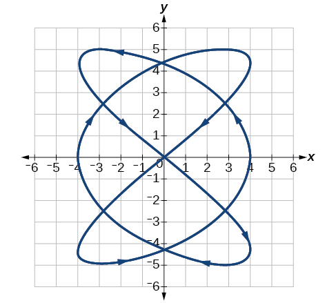
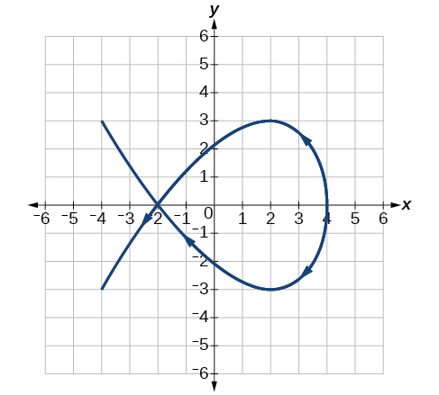
Solution
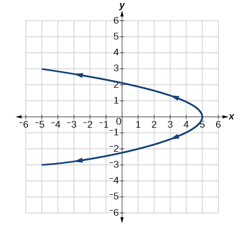
Graph all three sets of parametric equations on the domain
Solution
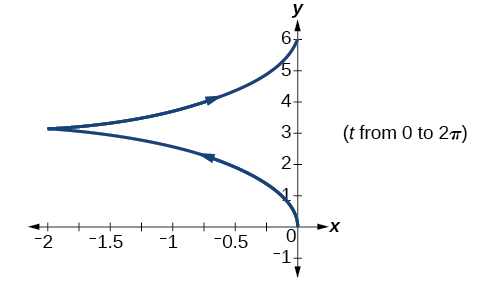
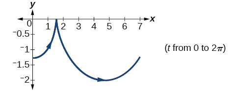
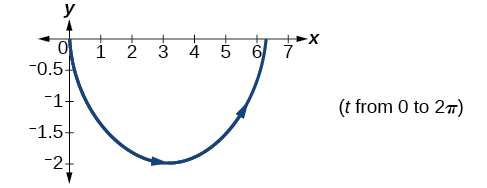
Graph all three sets of parametric equations on the domain
Graph all three sets of parametric equations on the domain
Solution
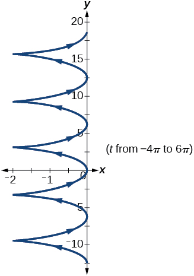
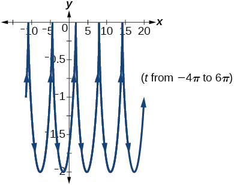
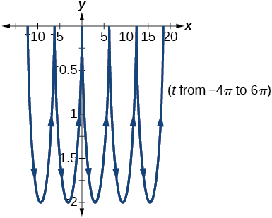
The graph of each set of parametric equations appears to “creep” along one of the axes. What controls which axis the graph creeps along?
Explain the effect on the graph of the parametric equation when we switched and .
Solution
The -intercept changes.
Explain the effect on the graph of the parametric equation when we changed the domain.
Extensions
An object is thrown in the air with vertical velocity of 20 ft/s and horizontal velocity of 15 ft/s. The object’s height can be described by the equation , while the object moves horizontally with constant velocity 15 ft/s. Write parametric equations for the object’s position, and then eliminate time to write height as a function of horizontal position.
Solution
A skateboarder riding on a level surface at a constant speed of 9 ft/s throws a ball in the air, the height of which can be described by the equation Write parametric equations for the ball’s position, and then eliminate time to write height as a function of horizontal position.
For the following exercises, use this scenario: A dart is thrown upward with an initial velocity of 64 ft/s at an angle of elevation of 52°. Consider the position of the dart at any time Neglect air resistance.
Find parametric equations that model the problem situation.
Solution
Find all possible values of that represent the situation.
When will the dart hit the ground?
Solution
approximately 3.2 seconds
Find the maximum height of the dart.
At what time will the dart reach maximum height?
Solution
1.6 seconds
For the following exercises, look at the graphs of each of the four parametric equations. Although they look unusual and beautiful, they are so common that they have names, as indicated in each exercise. Use a graphing utility to graph each on the indicated domain.
An epicycloid: on the domain .
A hypocycloid: on the domain .
Solution
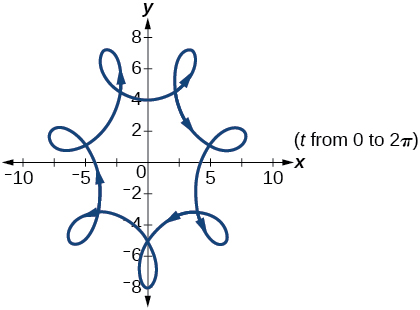
A hypotrochoid: on the domain .
A rose: on the domain .
Solution
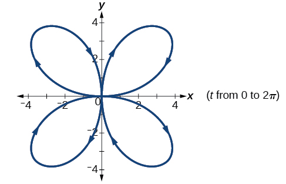
Analysis
As values for progress in a positive direction from 0 to 5, the plotted points trace out the top half of the parabola. As values of become negative, they trace out the lower half of the parabola. There are no restrictions on the domain. The arrows indicate direction according to increasing values of The graph does not represent a function, as it will fail the vertical line test. The graph is drawn in two parts: the positive values for and the negative values for